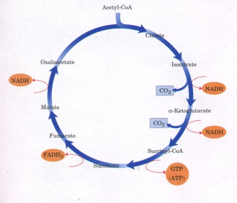
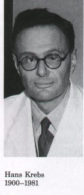
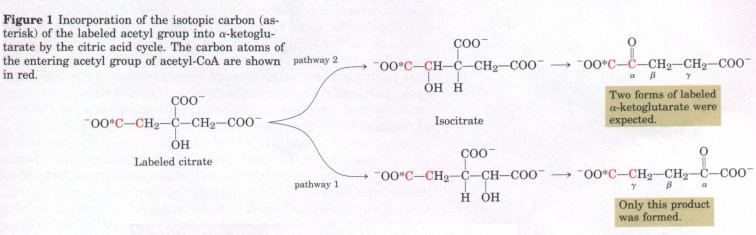
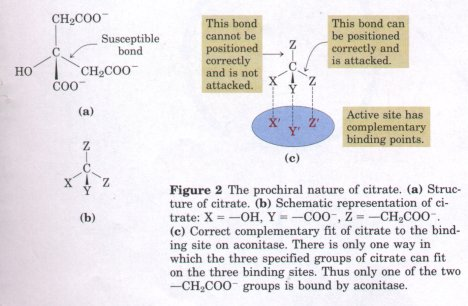
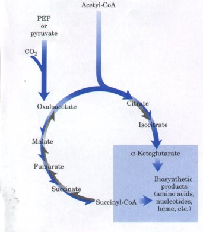
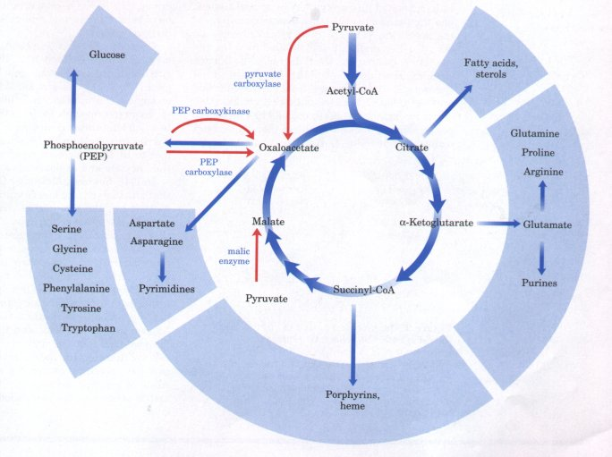
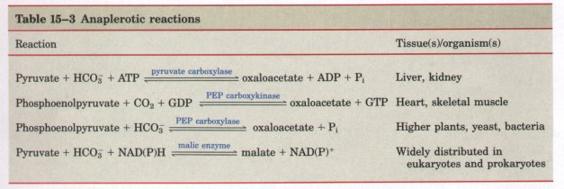
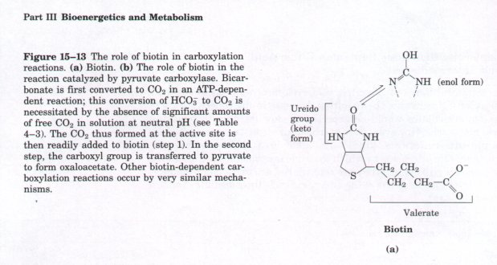
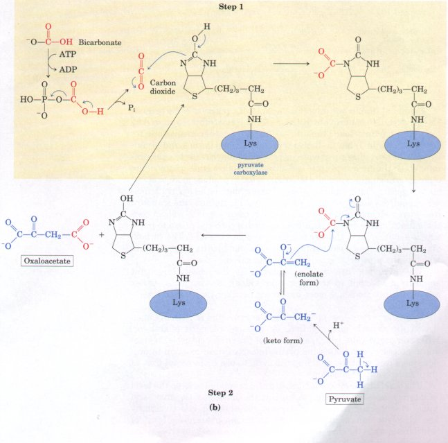

The Energy of Oxidations in the Cycle Is Efficiently
Conserved
| We have now covered one complete turn of
the citric acid cycle (Fig. 15-10). An acetyl group,
containing two carbon atoms, was fed into the cycle by
combining with oxaloacetate. Two carbon atoms emerged
from the cycle as CO2 with the oxidation of isocitrate
and a-ketoglutarate, and at the end of the cycle a
molecule of oxaloacetate was regenerated. Note that the
two carbon atoms appearing as CO2 are not the same two
carbons that entered in the form of the acetyl group;
additional turns around the cycle are required before the
carbon atoms that entered as an acetyl group finally
appear as CO2 (Fig. 15-7). Although the citric acid
cycle itself directly generates only one molecule of ATP
per turn (in the conversion of succinyl-CoA to
succinate), the four oxidation steps in the cycle provide
a large flow of electrons into the respiratory chain and
thus eventually lead to formation of a large number of
ATP molecules during oxidative phosphorylation.
|
 Figure
15-10 Each turn of the citric
acid cycle produces three NADH and one FADH2, as well as
one GTP (or ATP). Two CO2 are released in oxidative
decarboxylation reactions. (Here and in several following
figures, all cycle reactions are shown in one direction
only. Keep in mind that most of the reactions are
actually reversible, as shown in Fig. 15-7. )
|
We saw in the previous chapter that the energy yield from
glycolysis (in which one molecule of glucose is converted into
two of pyruvate) is two ATP molecules from one of glucose. When
both pyruvate molecules are completely oxidized to yield six CO2
molecules in the reactions catalyzed by the pyruvate
dehydrogenase complex and the enzymes of the citric acid cycle,
and the electrons are transferred to O2 via the respiratory
chain, as many as 38 ATP are obtained per glucose (Table 15-2).
In round numbers, this represents the conservation of 38 x 30.5
kJ/mol = 1,160 kJ/mol, or 40% of the theoretical maximum of 2,840
kJ/mol available from the complete oxidation of glucose. These
calculations employ the standard free-energy changes; when
corrected for the actual free energy required to form ATP within
cells (Box 13-2; p. 375), the calculated efficiency of the
process is even greater.
* This is calculated as 3 ATP per NADH and 2
ATP per FADH2. A negative value indicates consumption.
How Was the Cyclic Nature of the Pathway Established?

The historical road that led to the
understanding of this cyclic metabolic pathway is instructive; it
illustrates the general strategies used by biochemists since
early in this century to unravel complex metabolic relationships.
The citric acid cycle was first postulated as the pathway of
pyruvate oxidation in animal tissues by Hans Krebs, in 1937. The
idea of the cycle came to him during a study of the effect of the
anions of various organic acids on the rate of oxygen consumption
during pyruvate oxidation by suspensions of minced pigeon-breast
muscle. This muscle, used in flight, has a very high rate of
respiration and was thus especially appropriate for the study of
oxidative activity. Earlier investigators, particularly Albert
Szent-Gyorgyi, had found that certain four-carbon dicarboxylic
acids known to be present in animal tissuessuccinate, fumarate,
malate, and oxaloacetate-stimulate the consumption of oxygen by
muscle. Krebs confirmed this observation and found that they also
stimulate the oxidation of pyruvate. Moreover, he found that
oxidation of pyruvate by muscle is also stimulated by the
six-carbon tricarboxylic acids citrate, cis-aconitate, and
isocitrate, and the five-carbon a-ketoglutarate. No other
naturally occurring organic acids that were tested possessed such
activity. The stimulatory effect of the active acids was
remarkable: the addition of even a small quantity of any one of
them could promote the oxidation of many times that amount of
pyruvate.
The second important observation made by Krebs was that
malonate (p. 458), a close analog of succinate and a competitive
inhibitor of succinate dehydrogenase, inhibits the aerobic
utilization of pyruvate by muscle suspensions, regardless of
which actiue organic acid is added. This indicated that succinate
and succinate dehydrogenase must be essential components in the
enzymatic reactions involved in the oxidation of pyruvate. Krebs
further found that when malonate is used to inhibit the aerobic
utilization of pyruvate by a suspension of muscle tissue, there
is an accumulation of citrate, a-ketoglutarate, and succinate in
the suspending medium. This suggested that citrate and
a-ketoglutarate are normally precursors of succinate.
From these basic observations and other evidence, Krebs
concluded that the active tricarboxylic and dicarboxylic acids
listed above can be arranged in a logical chemical sequence.
Because the incubation of pyruvate and oxaloacetate with ground
muscle tissue resulted in accumulation of citrate in the medium,
Krebs reasoned that this sequence functions in a circular rather
than linear manner: its beginning and end are linked together.
For the missing link that closes the circle he proposed the
reaction
Pyruvate + oxaloacetate  citrate + CO2
citrate + CO2
(Notice that in this detail Krebs was originally incorrect.)
From these simple experiments and logical reasoning, Krebs
postulated what he called the citric acid cycle as the main
pathway for oxidation of carbohydrate in muscle. The citric acid
cycle is also called the tricarboxylic acid cycle because for
some years after Krebs postulated the cycle it was uncertain
whether citrate or some other tricarboxylic acid such as
isocitrate was the first product formed by reaction of pyruvate
and oxaloacetate. In the years since its discovery, the citric
acid cycle has been found to function not only in muscles but in
virtually all tissues of aerobic animals and plants and in many
aerobic microorganisms.
The citric acid cycle was first postulated from experiments
carried out on suspensions of minced muscle tissue. Subsequently
its details were worked out by study of the highly purified
enzymes of the cycle. One might ask whether these enzymes really
function in a cycle in intact living cells and whether the rate
of the cycle is high enough to account for the overall rate of
glucose oxidation in animal tissues. These questions have been
studied by the use of isotopically labeled metabolites, such as
pyruvate or acetate, in which the isotopes 13C or 14C are used to
mark a given carbon atom in the molecule. Many stringent
experiments with the isotope tracer technique have confirmed that
the citric acid cycle does take place in living cells, and at a
high rate.
Some of the earliest experiments with isotopes produced an
unexpected result, however, which aroused considerable
controversy about the pathway and mechanism of the citric acid
cycle. In fact, these experiments at first seemed to show that
citrate was not the first tricarboxylic acid to be formed. Box
15-2 gives some details of this episode in the scientific history
of the cycle.
B O X 15-2
Is Citric Acid the First Tricarboxylic Acid Formed in
the Cycle?

When the heavy-carbon isotope 13C and the radioactive
carbon isotopes 11C and 14C became available, they were
very soon put to use to trace the pathway of carbon atoms
through the citric acid cycle.  In one
such experiment, which initiated the controversy over the
role of citric acid, acetate labeled in the carboxyl
group (designated [1-14C]acetate) was incubated
aerobically with an animal tissue preparation. Acetate is
enzymatically converted into acetyl-CoA in animal
tissues, and the pathway of the labeled carboxyl carbon
of the acetyl group in the cycle reactions could be
traced. α-Ketoglutarate was isolated from the tissue
after incubation, then degraded by known chemical
reactions to establish the position(s) of the isotopic
carbon derived from carboxyl-labeled acetate.
Condensation of unlabeled oxaloacetate with
carboxyl-labeled acetate would be expected to produce
citrate labeled in one of the two primary carboxyl groups
(Fig. 1). Because citrate is a symmetric molecule, with
no asymmetric carbon, its two terminal carboxyl groups
are chemically indistinguishable. Therefore, half of the
labeled citrate molecules were expected to yield
a-ketoglutarate labeled in the α-carboxyl group and the
other half to yield a-ketoglutarate labeled in the
y-carboxyl group; that is, the α-ketoglutarate isolated
should have been a mixture of molecules labeled in both
carboxyl groups.
Contrary to this expectation, the labeled
α-ketoglutarate isolated from the tissue suspension
contained the isotope only in the γ-carboxyl group (Fig.
1). It was concluded that citrate itself, or any other
symmetric molecule, could not possibly be an intermediate
in the pathway from acetate to α-ketoglutarate. Hence an
asymmetric tricarboxylic acid, presumably cis-aconitate
or isocitrate, had to be the first condensation product
formed from acetate and oxaloacetate.
In 1948, however, Alexander Ogston pointed out that
although citrate has no chiral center (see Fig. 3-9), it
has the potential of reacting asymmetrically if
the enzyme acting upon it has an active site that is
asymmetric. He suggested that the active site of
aconitase, the enzyme acting on the newly formed citrate,
may have three points to which the citrate molecule must
be bound and that the citrate molecule must undergo a
specific three-point attachment to these binding points.
As seen in Figure 2, the binding of citrate to the three
points can happen in only one way, and this would account
for the formation of only one type of labeled
α-ketoglutarate. Organic molecules such as citrate that
have no chiral center, but are potentially capable of
reacting asymmetrically with an asymmetric active site,
are now called prochiral molecules.
|
Why Is the Oxidation of Acetate So Complicated?
This eight-step, cyclic process for oxidation of the simple
two-carbon acetyl groups to CO2 may seem unnecessarily cumbersome
and not in keeping with the principle of maximum economy in the
molecular logic of living cells. The role of the citric acid
cycle is not confined to the oxidation of acetate, however; this
pathway is the hub of intermediary metabolism. Four- and
five-carbon end products of many catabolic processes are fed into
the cycle to serve as fuels. Oxaloacetate and a-ketoglutarate
are, for example, produced from asparate and glutamate,
respectively, when proteins in the diet are degraded. Under other
circumstances, intermediates are drawn out of the cycle to be
used as precursors in a variety of biosynthetic pathways.
| The pathway used in modern organisms is
the product of evolution, much of which occurred before
the advent of aerobic organisms. It does not necessarily
represent the shortest pathway from acetate to
CO2, but is rather the pathway that has conferred the
greatest selective advantage on its possessors throughout
evolution. Early anaerobes very probably used some of the
reactions of the citric acid cycle in linear biosynthetic
processes. In fact, there are modern anaerobic
microorganisms in which an incomplete citric acid cycle
serves as a source, not of energy, but of biosynthetic
precursors (Fig. 15-11). These organisms use the first
three reactions of the citric acid cycle to make
α-ketoglutarate, but they lack α-ketoglutarate
dehydrogenase and therefore cannot carry out the complete
set of citric acid cycle reactions. They do have the four
enzymes that catalyze the reversible conversion of
oxaloacetate into succinyl-CoA (Fig. 15-11), and these
anaerobes make malate, fumarate, succinate, and
succinyl-CoA from oxaloacetate in a reversal of the
"normal" (oxidative) direction of flow through
the cycle. With the evolution of cyanobacteria that
produced O2 from water, the earth's atmosphere became
aerobic and there was selective pressure on organisms to
develop aerobic metabolism, which, as we have seen, is
much more efficient than anaerobic fermentation.
|
 Figure
15-11 The noncyclic reactions
(blue arrows) that provide biosynthetic precursors in
anaerobically growing bacteria. These cells lack
α-ketoglutarate dehydrogenase and therefore cannot carry
out the complete citric acid cycle, which normally
follows the direction shown with gray arrows.
α-Ketoglutarate and succinyl-CoA serve as precursors in a
variety of biosynthetic reactions (see Fig. 15-12 ).
|
Citric Acid Cycle Components Are Important Biosynthetic
Intermediates
In aerobic organisms, the citric acid cycle is an amphibolic
pathway (i.e., it serves in both catabolic and anabolic
processes). It not only functions in the oxidative catabolism of
carbohydrates, fatty acids, and amino acids, but also provides
precursors for many biosynthetic pathways (Fig. 15-12), as in
anaerobic ancestors. By the action of several important auxiliary
enzymes, certain intermediates of the citric acid cycle,
particularly α-ketoglutarate and oxaloacetate, can be removed
from the cycle to serve as precursors of amino acids. Aspartate
and glutamate have the same carbon skeletons as oxaloacetate and
α-ketoglutarate, respectively, and are synthesized from them by
simple transamination (Chapter 21). Through aspartate and
glutamate the carbons of oxaloacetate and α-ketoglutarate are
used to build other amino acids as well as purine and pyrimidine
nucleotides. We will see in Chapter 19 how oxaloacetate is
converted into glucose in the process of gluconeogenesis.
Succinyl-CoA is a central intermediate in the synthesis of the
porphyrin ring of heme groups, which serve as oxygen carriers (in
hemoglobin and myoglobin) and electron carriers (in cytochromes).
Given the number of biosynthetic products derived from citric
acid cycle intermediates, this cycle clearly serves a critical
role apart from its function in energy-yielding metabolism.

Figure 15-12 Intermediates
of the citric acid cycle are drawn off as precursors in many
biosynthetic pathways, yielding the products in the shaded areas.
Shown in red are four anaplerotic reactions that replenish
depleted intermediates of the citric acid cycle (see Table 15-3).
Anaplerotic Reactions Replenish Citric Acid Cycle
Intermediates
When intermediates of the citric acid cycle are removed to
serve as biosynthetic precursors, the resulting decrease in the
concentration of these intermediates would be expected to slow
the flux through the citric acid cycle. However, the
intermediates can be replenished by anaplerotic reactions
(Fig. 15-12; Table 15-3). Under normal circumstances the
reactions by which the cycle intermediates are drained away and
those by which they are replenished are in dynamic balance, so
that the concentrations of the citric acid cycle intermediates
remain almost constant.

In animal tissues one important anaplerotic
reaction is the reversible carboxylation of pyruvate by CO2 to
form oxaloacetate, catalyzed by pyruvate carboxylase
(Table 15-3). The three other anaplerotic reactions shown in
Table 15-3 also serve, in various tissues and organisms, to
convert either pyruvate or phosphoenolpyruvate to oxaloacetate.
When the citric acid cycle is deficient in oxaloacetate or any of
the other intermediates, pyruvate is carboxylated to produce more
oxaloacetate. The enzymatic addition of a carboxyl group to the
pyruvate molecule requires energy, which is supplied by ATP.
Because the standard free-energy change of the overall reaction
is very small, we can conclude that the free energy required to
attach a carboxyl group to pyruvate is about equal to the free
energy available from ATP. The carboxylation of pyruvate also
requires the vitamin biotin (Fig. 15-13a), which
is the prosthetic group of pyruvate carboxylase.
The pyruvate carboxylase reaction is the most important
anaplerotic reaction in the liver and kidney of mammals. Other
anaplerotic reactions are more important in other tissues and
organisms (Table 15-3).
Pyruvate carboxylase is a regulatory enzyme and is virtually
inactive in the absence of acetyl-CoA, its positive allosteric
modulator. Whenever acetyl-CoA, which is the fuel for the citric
acid cycle, is present in excess, it stimulates the pyruvate
carboxylase reaction to produce more oxaloacetate, enabling the
cycle to use more acetyl-CoA in the citrate synthase reaction.
The other anaplerotic reactions are also regulated to keep the
level of intermediates high enough to support the activity of the
citric acid cycle. Phosphoenolpyruvate carboxylase, for example,
is activated by the glycolytic intermediate
fructose-1,6-bisphosphate, the level of which rises when the
citric acid cycle operates too slowly to process the pyruvate
generated by glycolysis.


Biotin Carries O2 Groups
Biotin plays a key role in many carboxylation reactions. This
vitamin is a specialized carrier of one-carbon groups in their
most oxidized form: CO2. (The transfer of one-carbon groups in
more reduced forms is mediated by other cofactors, notably
tetrahydrofolate and S-adenosylmethionine, as described in
Chapter 17.) Carboxyl groups are attached to biotin at the ureido
group within the biotin ring system (Fig. 1513a).
Pyruvate carboxylase is composed of four identical subunits,
each containing a molecule of biotin covalently attached through
an amide linkage between its valerate side chain and the e-amino
group of a specific Lys residue in the enzyme active site (Fig.
15-13b); this biotinyllysine is called biocytin.
Carboxylation of pyruvate proceeds in two steps; first, a
carboxyl group derived from HCO3- is attached to biotin, then the
carboxyl group is transferred to pyruvate to form oxaloacetate.
These two steps occur at separate active sites; the long flexible
arm of biocytin permits the transfer of activated carboxyl groups
from the first active site to the second, much as the long
lipoyllysyl arm of E2 functions in the pyruvate dehydrogenase
complex.
Biotin is a vitamin required in the human diet; it is abundant
in many foods and is synthesized by intestinal bacteria.
Deficiency diseases are rare and are generally observed only when
large quantities of raw eggs are consumed. Egg whites contain a
large amount of the protein avidin (Mr 70,000),
which binds to biotin very tightly and prevents its absorption in
the intestine. The avidin in egg whites may be a defense
mechanism, inhibiting the growth of bacteria. When eggs are
cooked, avidin is denatured (and thereby inactivated) along with
all other egg white proteins.